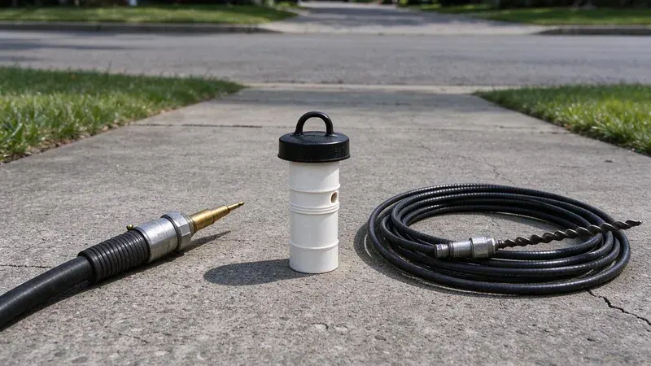
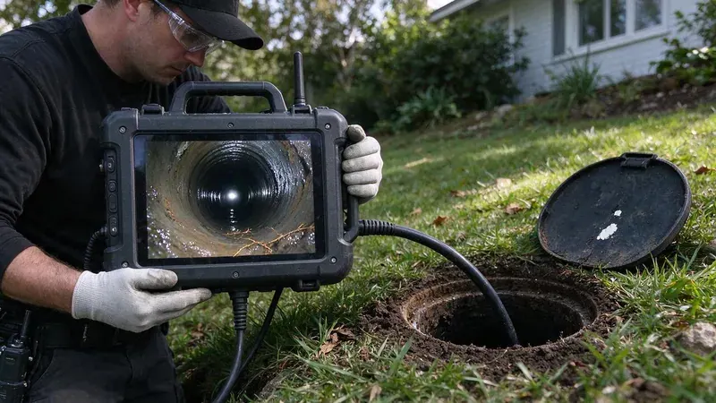

Plumbing Tips & Updates From BVL Plumbing
 15Oct, 2026
15Oct, 2026Slab Leak Warning Signs Every Maryland Homeowner Should Know
Plenty of Maryland houses sit on a concrete slab with the water lines poured in below. Here is how to catch a leak early.
 6Oct, 2026
6Oct, 2026How to Protect Your Pipes Before the Next Maryland Freeze
A split pipe in a wall can dump hundreds of gallons overnight. Here is how to stop a Maryland home from freezing up.
 27Sep, 2026
27Sep, 2026Hard Water in Maryland: When a Water Softener Pays for Itself
Most homeowners never add up what scale is costing them. Here is when a softener is worth buying.
 18Sep, 2026
18Sep, 2026Tankless vs. Tank Water Heaters: What Works Best in Maryland
Both kinds of water heater work. The right one for a Maryland home depends on how many showers run at once and what your water does to a heat exchanger.
 9Sep, 2026
9Sep, 2026Kitchen Sink Backups: Causes, Prevention and Quick Solutions
A backed-up kitchen sink stops dinner cold. Here is why it happens and what you can try first.
 31Aug, 2026
31Aug, 2026Underground Pipe Damage: Common Causes and Modern Repair Solutions
A broken pipe underground no longer means a trench across the yard. Here is how buried lines fail and how it gets fixed.

22Aug, 2026Hydro Jetting vs. Snaking: Which Drain Cleaning Method Do You Need?
A drain snake and a jetter fix different problems. Here is how to tell which one your line actually needs.

13Aug, 2026Why a Sewer Camera Inspection Belongs on Every Maryland Home Inspection
Most home inspections never look past the visible drains. Here is why a sewer camera belongs on the list in Maryland.
Have a plumbing question we did not cover?
Our team is happy to talk it through and give you a straight answer.